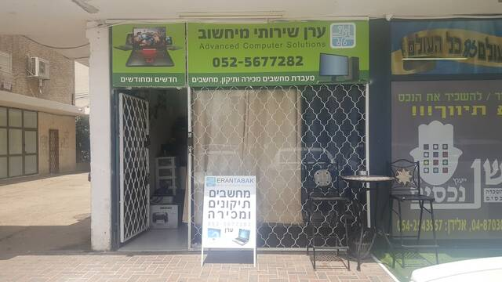
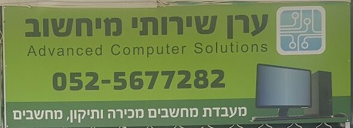
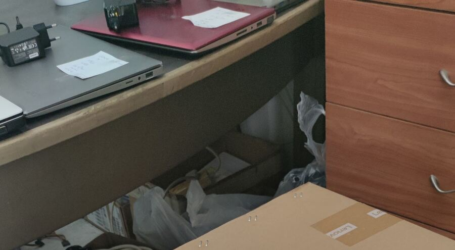
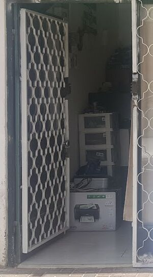

מחשבים נייחיםDesktops
לוח אם, כרטיס רשת וכרטיס קול, ספק כוח, מערכת הפעלה והסרת וירוסים.Motherboards, network and sound cards, power supplies, operating systems and virus removal.
קונספט לדוגמה שנבנה עבור ערן טבק שירותי מיחשוב · זה אינו האתר הרשמי של העסקA sample concept built for Eran Tabak Computer Services · This is not the business’s official website
מחשבים, מבפנים.Computers, from the inside.
ערן טבק שירותי מיחשוב: מעבדה לתיקון ולמכירה של מחשבים ניידים ונייחים, ברחוב י.ל. פרץ 9 בקריית ים.Eran Tabak Computer Services: a lab that repairs and sells laptops and desktops, at 9 Y.L. Peretz St, Kiryat Yam.
ככה נראה מחשב נייד מבפנים, ואלה החלקים שערן מחליף ומתקן.This is a laptop from the inside, and these are the parts Eran replaces and repairs.
תיקון, שדרוג, מכירה והתקנה, בחנות או אצלכם.Repairs, upgrades, sales and setup, in the shop or at your place.
לוח אם, כרטיס רשת וכרטיס קול, ספק כוח, מערכת הפעלה והסרת וירוסים.Motherboards, network and sound cards, power supplies, operating systems and virus removal.
מסך שבור, מקלדת, שקע טעינה ולוח אם.Cracked screens, keyboards, charging ports and motherboards.
נייחים וניידים, חדשים ומחודשים.Desktops and laptops, new and refurbished.
רשתות אלחוטיות, הגדרות רשת ושיתוף קבצים ומדפסות.Wireless networks, network settings, file and printer sharing.
תחזוקה לכיתות מחשבים ולמשרדים.Upkeep for computer classrooms and offices.
שירות טכנאי עד בית הלקוח, בחיפה, בקריות ובצפון.A technician at your home, in Haifa, the Krayot and the north.
גררו את הטבעת, או פשוט גללו.Drag the ring, or just scroll.




4.5מתוך 5, מ-92 ביקורות בגוגלout of 5, from 92 Google reviews
ערן היה מאוד שירותי,אדיב,נחמד,ומקצועי,ממש נעים לדבר עם אדם שכזה! עשה מעל ומעבר ,רצה לפתוח את החנות (לא בשעות עבודה)במיוחד בשבילי כדי שלא אשאר בלי כבל למחשב,ממליץ בחום!
Eran was very service-minded, courteous, nice and professional, a real pleasure to talk to! He went above and beyond, wanting to open the shop (outside working hours) especially for me so I wouldn’t be left without a computer cable. Highly recommended!
ערן טבק מקצוען מס.1 בתחום המחשבים. פותר כל בעיה ומסדר כל תקלה. תמיד זמין והכי אמין. תודה לך על שירות נפלא במשך שנים רבות בעבר, ועוד שנים רבות בעתיד. בהערכה רבה, שרה ומוטי.
Eran Tabak is the number-one professional in computers. Solves every problem and fixes every fault. Always available and the most reliable. Thank you for wonderful service over many years past, and many more to come. With great appreciation, Sara and Moti.
הגעתי לערן בהתקף חרדה קל כשהמחשב הנייד שלי נכבה ולא נדלק. ערן אבחן את התקלה תוך כמה רגעים בצורה מקצועית ומדוייקת והסביר שהלוח אם נהרס ועלות התיקון היא כמה מאות שקלים, מיוזמתו הוא הציע שנבדוק אם האחריות עדיין בתוקף הוא בדק ומצא שנשאר שבוע לאחריות. למרות שכבר הסכמתי לתיקון הוא היה ישר ואפילו עזר לי לפתוח פנייה ל-DELL ולנצל את האחריות שלי ללא עלות וללא שביקש תמורה. תודה לך ערן
I came to Eran in a mild panic when my laptop shut down and wouldn’t turn on. Eran diagnosed the fault within moments, professionally and precisely, and explained that the motherboard was ruined and the repair would cost a few hundred shekels. On his own initiative he suggested we check whether the warranty was still valid; he checked and found a week was left on it. Although I had already agreed to the repair, he was honest and even helped me open a claim with DELL and use my warranty at no cost, without asking anything in return. Thank you, Eran
ממליצה מאוד על ערן מקסים ומקצועי מאוד. נתן לי שרות מהיר ואדיב. ישר פתר את הבעיה וטיפל בכל מה שהיה צריך במקום
I highly recommend Eran, lovely and very professional. He gave me quick, courteous service. He solved the problem right away and took care of everything that was needed on the spot
כן. ערן נותן שירות טכנאי עד בית הלקוח: בחיפה, בקריות, בעכו, בנהריה ובצפון.Yes. Eran offers technician visits at the customer’s home: in Haifa, the Krayot, Acre, Nahariya and the north.
כן. בחנות יש מחשבים נייחים וניידים, חדשים ומחודשים.Yes. The shop sells desktops and laptops, new and refurbished.
החלפת מסך שבור, החלפת מקלדת אחרי רטיבות או מקשים שבורים, החלפת שקע טעינה ותיקון לוח אם.Cracked screens, keyboards after spills or broken keys, charging ports, and motherboard repair.
כן: רשתות אלחוטיות, הגדרות רשת ושיתוף קבצים ומדפסות, וגם תחזוקה לכיתות מחשבים ולמשרדים.Yes: wireless networks, network settings, file and printer sharing, plus upkeep for computer classrooms and offices.
ראשון עד חמישי 8:00–20:00, שישי 8:00–16:00, שבת סגור.Sunday to Thursday 8:00–20:00, Friday 8:00–16:00, closed on Saturday.